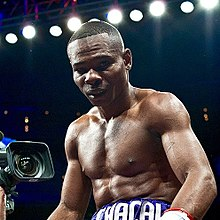

Pressure Fighter
Pressure boxers focus primarily on overwhelming their opponents with many combinations. This style's overwhelming nature often leads to opponents being kept in a defensive state for most of the match. Boxing is centered around offense, for this reason, this style scores huge points with judges do to its offense-oriented mindset. However, throwing many punches and staying on the offensive takes a major toll on a boxer's stamina. Due to this boxers of this style require much more conditioning and endurance in order to be efficient. (Hover over the image to the right see a transformation).
Out-boxer

An outboxer is very much the opposite of a pressure boxer. An outboxer focuses more so on a defensive long ranged style and precise and accurate punches. Technique and decision making are paramount to a outboxer.Due to thier defensive style these boxers tend to lack in power and knock-out potential, leading many of thier wins coming from decision. (Hover over the image to the right see a tranformation).
Slugger
While an out boxer may focus on strategy and finesse, a slugger does the opposite and focuses on strength and brute force. These boxers often get in close to deal their most damaging blows. This style is can also be referred to as a brawler. It should be noted that while these boxers use brute force to win their matches they are not mindless. Cornering their opponents and getting in range to deal the most amount of damage they can requires technique and planning.
Counter Puncher
As the name suggests a counter-puncher focuses on countering there opponents punches. These boxers are known for their high skill, talent, and technique. Fighting these boxers is both annoying and painful as counter punches can deal devastating damage due to their ability to use the opponents forward momentum against them. The downside of this style is its reactive nature. Setting up their counterpunches require them to wait for their opponent to act meaning they rarely initiate offense and can be overwhelmed.
Boxer-Puncher
The Boxer-Puncher is the Jack of all trades, switching between pressure fighter and out-boxer styles a Boxer-Puncher usually likes to work their way in on the opponent. They are often looking to capitalize on mistakes pouring on the heat when they know the other boxer is hurt. Due to this, they are very difficult to deal with when they are on the offensive but typically lack defense since they often only focus on offense.